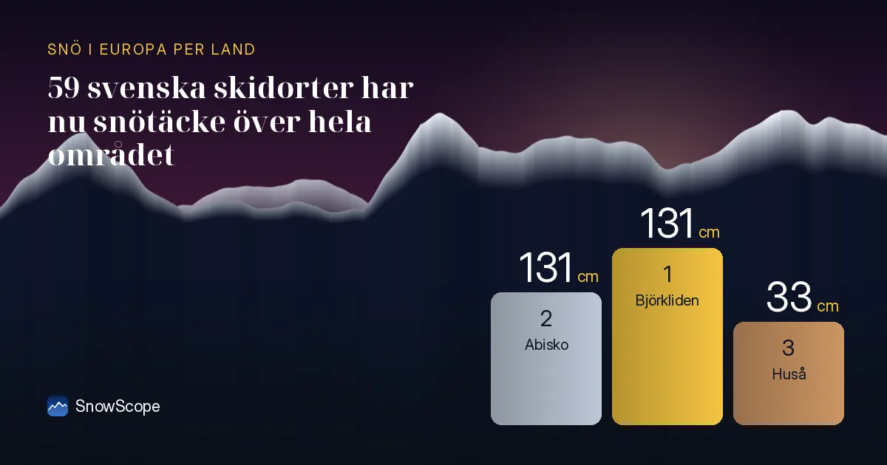

59 svenska skidorter har nu snötäcke över hela området
59 av Sveriges 75 skidorter har snö på sina backar idag. De nordliga skidorterna är rikast: Björkliden och Abisko ligger båda på 131 cm mätt vid basstationen, och topparna har mycket djupare snö.
Se snöprognosen för Björkliden live i SnowScope-appenSnödjup, pudervarningar och 3D-kartan, gratis.
59 orter redo
För tre veckor sedan fanns bara spridda snöfläckar över Sveriges skidterräng. Idag har 59 orter mätbar snötäcke. Den vita andelen har växt från nästan ingenting till 79% av det kartlagda området. Denna snabba förändring inträffade när de första riktiga snöfallen på säsongen kom under andra hälften av november.
De nordliga skidorterna leder. Björkliden ligger på 131 cm vid basstation (933 m), och Abisko motsvarar det på 902 m höjd. Båda fick 4 cm nysnö under de senaste 72 timmarna. Längre söderut blir bilden tunnare: Huså har 33 cm, Almåsa 32 cm och Högfjället 29 cm. På lägre höjder och i södern är snön fortfarande grund och fläckvis, med stenar och växtlighet som sticker igenom.
Det spelar roll var du är. Åk högt, åk norrut. Stanna lågt eller söderut, och du är fortfarande på höstterräng.
| Skidort | Snödjup | Nysnö, 72 h | På väg, kommande dagar | Topp |
|---|---|---|---|---|
| Björkliden | 131 cm | 4 cm | 11 cm | 933 m |
| Abisko | 131 cm | 4 cm | 10 cm | 902 m |
| Huså | 33 cm | 3 cm | 5 cm | 677 m |
| Almåsa | 32 cm | 1 cm | 6 cm | 702 m |
| Högfjället | 29 cm | 1 cm | 9 cm | 886 m |

Där snön ligger djupast
Höjden bestämmer snödjupet i bergen. Under 500 m är bara 72% av terrängen täckt och medelddjupet är bara 8 cm. Hoppa till 500-1000 m och täcket blir fullständigt; medeldjupet ligger på 14 cm. Över 1000 m förändras historien. Mellan 1000 och 1500 m visar vår modell ett medeldjup på 42 cm och fullständig täckning. Över 1500 m stiger djupet till 67 cm i genomsnitt över fullständig täckning.
Snögränsen ligger på cirka 100 m höjd. Under det vinner hösten fortfarande. Det här är tidigsäsongssnö, tunn och fläckvis i dalgångarna. Det lönar sig att titta på prognosen innan du åker till en skidort på låg höjd—en värmebölga kan ångra veckors arbete på dagar.

Hemavans fjäll vinner
Tre områden har samlat mest nysnö under de senaste 72 timmarna. Hemavans fjäll i nordväst fick 15 cm. Lapplands fjäll runt Björkliden och Abisko adderade 11 cm. Jämtlandsmassiven i centrala Sverige fick 9 cm. Dessa zoner ligger där stormbanor skickar kallluft och fuktig luft från Atlanten.
Cirka 30 960 km² terräng—ungefär en tiondel av det kartlagda området—har fått minst 5 cm på tre dagar. Det räcker för att stabilisera basen och begrava låga hinder. Imorgon, 11 november, förväntas bli veckans snörikaste dag.
Vad som kommer
De nästa tre dagarna kan addera upp till 15 cm i de bästa zonerna; över sju dagar upp till 17 cm. Imorgon är toppendagen. Det här kommer att öka djuptotalen och utöka snötäcket till de mittligahöjd skidorterna som idag fortfarande är marginella. Norrtopparna kommer att fortsätta att ansamla snö.
Till 20 november kan de mest exponerade lägre platserna fortfarande vara tunna. De högre bergen och norden kommer att befästa sin bas för vintern.
Igår till idag
Snötäcket växte med 1 550 km² på en dag. Björkliden passerade Abisko för djupaste paket vid skidortens basstationsstation, även om båda ligger på samma 131 cm. Det här är ingen stor förskjutning—de nordliga skidorterna kör nästan identiska snöprofiler. Den riktiga tillväxten ligger i område. För en vecka sedan bar bara 119 070 km² av Sveriges skidterräng snö. Idag är 258 540 km² vit. Det är en ökning på 139 470 km² på sju dagar—en omvandling driven av den första riktiga vinterstormsekvensen.
Försiktighet i tidigsäsongen
Snön är ny. Där djupet är under 30 cm finns stenar och stubbor fortfarande en risk; islagringar ligger under den nya pudern. Baslagret under imorgons nysnö kan sakta ned ojämnt. Nordliga skidorter med 100+ cm har säkerhetsmarginal. De södra och låghöjds skidorterna, med 30 cm eller mindre, är skörare.
Kontrollera den officiella lavinprognosen för varje zon innan du åker. Använd SnowScope för att spåra när din valda skidort passerar djupgränsen som känns säker för din skidstil.
Tips för skidåkare
- Åk norrut eller över 1000 m för pålitlig snö. Björkliden, Abisko och Hemavans fjäll har 100+ cm och är säkrast nu.
- Om du väljer en mittligahöjd skidort (500-1000 m) eller en längre söderut, vänta på imorgons nysnö att slå sig ned—åtminstone en dag—innan du åker utanför backen.
- Se upp för stenar och is på skidorter med mindre än 30 cm djup. Backskidåkning är vanligtvis säker; backcountry och branta sidor är det inte än.
- Till 20 november kan lägre skidorter ha tillräckligt nytt täcke för att kännas mer stabilt; bergen blir ännu rikare.
- Kontrollera den officiella lavinprognosen för din zon före varje utflykt, särskilt på branta backar och i raviner.
Om siffrorna
Snödjupen för skidorterna är det djupaste snötäcket på ortens övre backar enligt SnowScopes snömodell (cirka 1 km, körning från 17 november); de är uppskattningar för ett område, inte en mätning på en punkt. Stationsvärden är mätningar på det angivna datumet. Prognoser kan ändras. Läs alltid den officiella lavinprognosen innan du åker offpist.
Citera den här rapporten
För forskning, undervisning eller press: siffrorna och diagrammen får återanvändas fritt under CC BY 4.0 med den här källhänvisningen.
SnowScope (2026), 59 svenska skidorter har nu snötäcke över hela området, https://snowscope.app/blog/sv/2026/11/sweden-snow-report-17-november-2026.html, hämtad 2026-11-17
SnowScope (Atlas Labs). (2026, November 17). 59 svenska skidorter har nu snötäcke över hela området. SnowScope snow reports. https://snowscope.app/blog/sv/2026/11/sweden-snow-report-17-november-2026.html
BibTeX
@misc{snowscope2026swedensnowreport17novemb,
author = {{SnowScope (Atlas Labs)}},
title = {59 svenska skidorter har nu snötäcke över hela området},
year = {2026},
month = nov,
howpublished = {\url{https://snowscope.app/blog/sv/2026/11/sweden-snow-report-17-november-2026.html}},
note = {Published 2026-11-17 12:53 UTC; accessed 2026-11-17}
}· CC BY 4.0 · Metoder, data och verktyg →
Björkliden: snö och temperatur efter höjd, i vinter jämfört med förra (verktyg) →
Följ Björkliden
Gratis: ett meddelande när nysnö är på väg, och prognosen varje morgon.